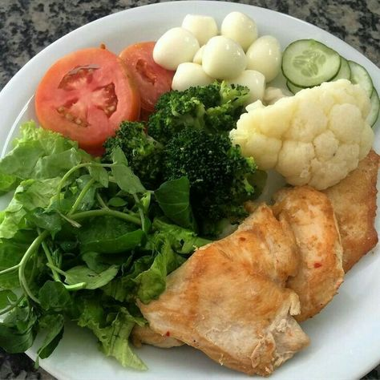

Recetas para cada día, ¡elabora tu menú diario!
Inicio Nuestra Cocina Participa y gana Tu vida más fácil A tu salud Grupo IFA Blog DESPLEGAR MENÚ » Inicio » Nuestra Cocina » De diario
De diario
Una selección de las mejores y más fáciles recetas para comer rico y sano todos los días de la semana. Ya no tienes excusas para no comer casero: ponte el delantal y cocina.
Ver todo Aprovechamiento Cocina Inteligente De diario De picoteo En un plisplás Momentos dulces Navidad Para llevar Platos de casa Recetas Exclusivas Sin derrochar Un homenajeSalteado de espaguetis de calabacín con gambas
No te pierdas esta receta paso a paso y aprende a preparar este sabroso plato de verduras con un toque picante delicioso.
( 10 votos)Ver receta »
Crema de coliflor
¿Crees que la coliflor es una verdura aburrida? Echa un vistazo a esta receta y descubre cómo sacar el máximo partido en poco tiempo y sin complicaciones a esta verdura tan poco apreciada.
( 6 votos)Ver receta »
Ensalada pimientos asados con bacalao
Una ensalada ideal y muy completa que podrás preparar con antelación para darte un respiro durante la semana.
( 8 votos)Ver receta »
Boquerones macerados
No te pierdas esta receta paso a paso y consigue un rebozado crujiente y esponjoso con esta deliciosa masa orly. Hoy te proponemos utilizarla con unos boquerones pero también es perfecta para rebozar unas buenas gambas o unos calamares.
( 4 votos)Ver receta »
Pastel de carne
Una receta casera que nunca falla, perfecta para los más pequeños de la casa y que puedes cocinar con antelación si no tienes tiempo entre diario para prepararla.
( 4 votos)Ver receta »
Tacos de pollo y queso fresco
Si te gusta la cocina mexicana y no sabes que hacer de cena hoy, no te pierdas esta receta de tacos. Es muy fácil de elaborar y apta para toda la familia.
( 3 votos)Ver receta »
Pollo en pepitoria
Uno de los platos más clásicos de la gastronomía tradicional española. Receta típica de almuerzos en familia en casa de las abuelas que nunca defrauda y, además es muy fácil de elaborar.
( 1 votos)Ver receta »
Pimientos del piquillo con bacalao
Un plato tradicional y que gusta a todo el mundo. Toma nota de esta deliciosa receta e incorpórala a tu menú diario.
( 1 votos)Ver receta »
Boquerones macerados y rebozados
Una receta de pescado azul fácil, tradicional y con un sabor espectacular. No te pierdas esta receta que se convertirá en un imprescindible para tus elaboraciones diarias.
( 8 votos)Ver receta »
Macarrones con salchichas y espinacas
La pasta es la reina de las comidas para niños. Con algunos ingredientes de la alacena y otros frescos de la nevera, es posible crear preparaciones fáciles, rápidas y nutritivas como esta.
( 5 votos)Ver receta »
Salchichas con manzana y cebolla
Una receta muy fácil de cocinar. Las salchichas pueden ser acompañadas por multitud de guarniciones, ya sean purés, encebollados o incluirlas en otras preparaciones como arroces y pastas. En este caso, nos decantamos por una guarnición sencilla donde el dulzor de la cebolla y la manzana contrarrestan la potencia y la acidez del vino.
( 6 votos)Ver receta »
Empanadillas fáciles
La receta ideal para preparar en familia en nuestro tiempo libre. Una excusa perfecta para que los más pequeños se inicien en la cocina de una forma sencilla y divertida.
( 4 votos)Ver receta » 1 2 Siguiente »
© 2015 GRUPO IFA - Todos los derechos reservados | Términos Legales © 2015 GRUPO IFA
Todos los derechos reservados
| Términos Legales
Utilizamos cookies propias y de terceros para ofrecer nuestros servicios, recoger información estadística e incluir publicidad. Si continúa navegando, acepta su instalación y uso. Puede cambiar la configuración u obtener más información en nuestra política de cookies .
ACEPTAR Aviso de cookies